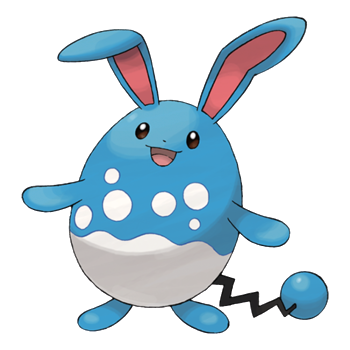

Hello,
I'm Azumarill, a blue bipedal Pokémon that has an ovoid body. The lower half of my
body is white with a white, bubble-like pattern above it, which helps to camouflage it in water.
I have elongated, rabbit-like ears with red insides and circular eyes.
When in the water,
I rolls up my ears to prevent the insides from becoming wet. My arms and feet are short with rounded
ends and no discernible digits.I have a black zigzagging tail with a blue, bubble-like tip. The tip
of my tail tends to glow when I attacks or is excited.